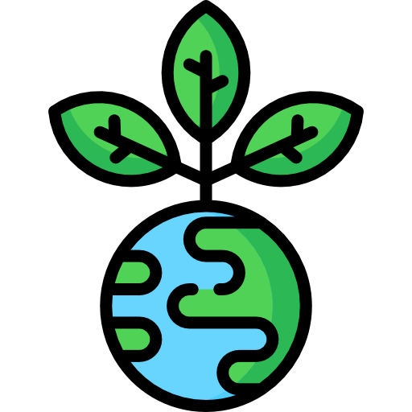
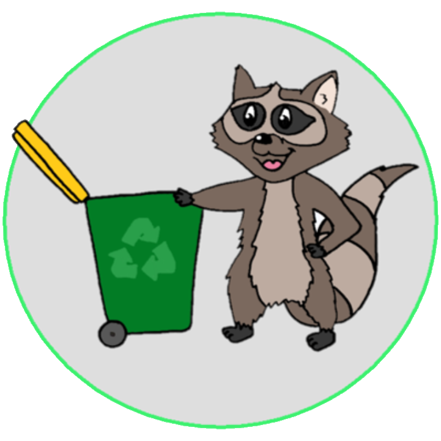
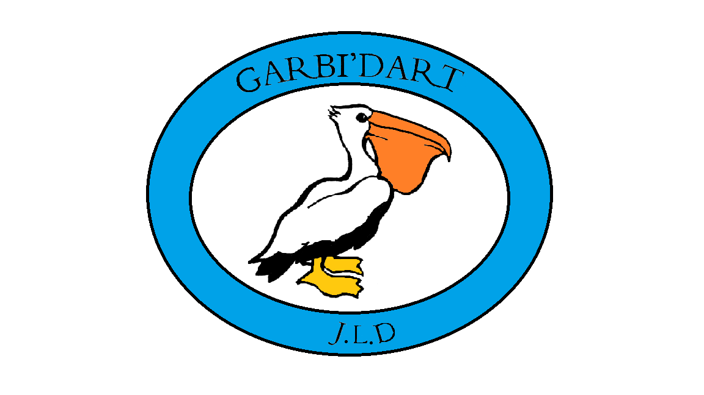

Dans le cadre de notre formation Bachelor de technologies à l’ESTIA, nous devons étudier le fonctionnement d’un projet du début à la fin, travailler en coopération, et découvrir les méthodes de conception et de travail en équipe nécessaires au bon déroulement d'un projet pluridisciplinaire.
EDUCATION

ECOLOGIE
AVENIR
Ainsi, nous devons étudier, concevoir et réaliser un système visant à aider les usagers à trier leurs déchets à l’aide d’une interaction pédagogique. Nous avons choisi de nommer notre produit « Triosaure ». Ce nom lui confère une consonance infantile visant les principaux utilisateurs qui ne sont autres que les enfants de 6 à 10 ans. Il permettra aux enfants d’acquérir des connaissances sur les bonnes pratiques à adopter par rapport au tri.
Beer Ordered
51% des francais trient systématiquement
55 Kg de dechet triés par personne en 2019
1,6 million de tonnes de CO2 évitées
30 millions de francais peuvent trier TOUS leurs emballages
Ces chiffres montrent l'importance du tri selectif et surtout sa necessité. En montrant et expliqant aux enfants dès leur plus jeune age, le fonctionnement du tri et sa bonne pratique, nous esperons renforcer ces chiffres. Cela consitue une etape essentiel pour preserver notre planète aussi longtemps que possible.
Ci-dessous vous pouvez retrouver les différents sites sur lesquels se situent notre système :
Le bachelor est composé d'une trentaine d'étudiants, regroupé par 3 ou 4, ainsi nous vous proposons d'aller découvrir leurs projets :

ROMEO

GARBI'DART